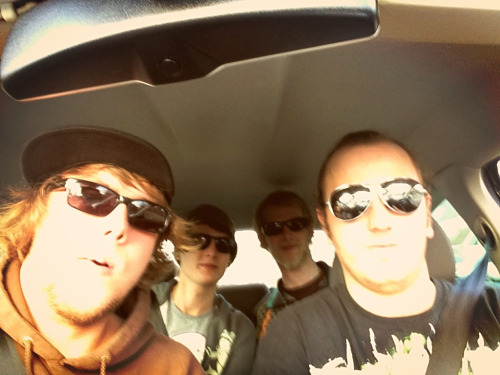

Niels Leenheer
Vreemde browsers
Naast de standaard browsers zoals Google Chrome, Firefox en Safari is er nog een hele set aan 'vreemde' browsers. Dit zijn browsers die je bijvoorbeeld op smart-tv's en game-consoles vind.
Het web, en daarbij ook de websites die wij maken, moet toegankelijk zijn voor iedereen, maar deze 'vreemde' browsers doen er alles aan om te voorkomen dat dit lukt!
Het grootste probleem is niet dat met een afstandsbediening of gamecontroller een website lastig te navigeren is. Het grootste probleem is ook niet dat ze niet of nauwlijks geupdate worden hierdoor zitten er veel features niet in die wel in andere browsers zitten.
Dit zou natuurlijk niet een heel groot probleem zijn, als je je website volgens PE (progressive enhancement) richtlijnen ontwikkeld. Toch? Maar er zijn meer problemen. TV's maken bij het aansluiten van een extern apparaat vaak (maar niet altijd) gebruik van overscan. Dit betekend dat het beeld 5% wordt uitvergroot waardoor er aan alle kanten delen van je website wegvallen.
Toekomst
Ik zie geen toekomst voor TV browsers ik denk dat we meer richting applciaties zullen gaan die speciaal ontwikkeld zijn voor grote schermen inplaats van websites die rekening moet houden dat ze ook op een TV browser weergegeven zullen worden.
- Weekly Nerd
- Browsers